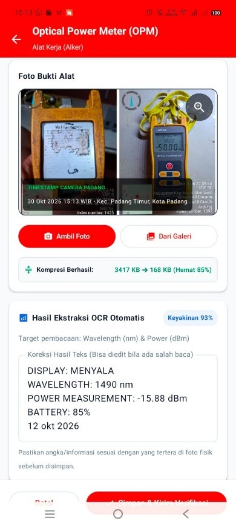
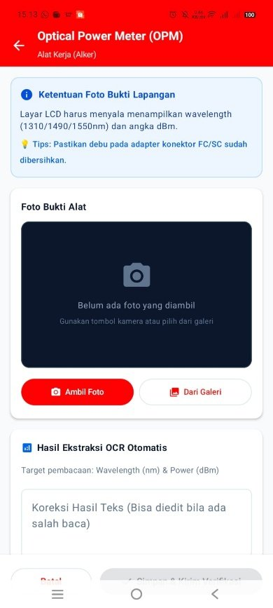
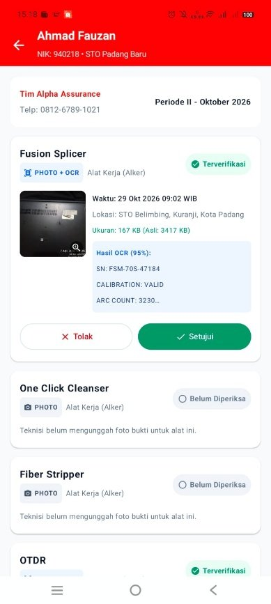
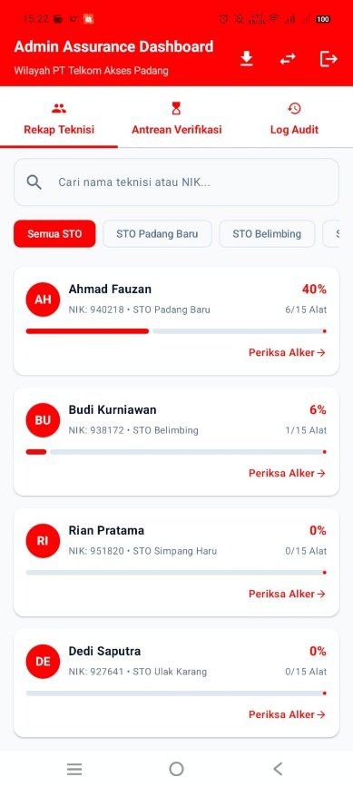
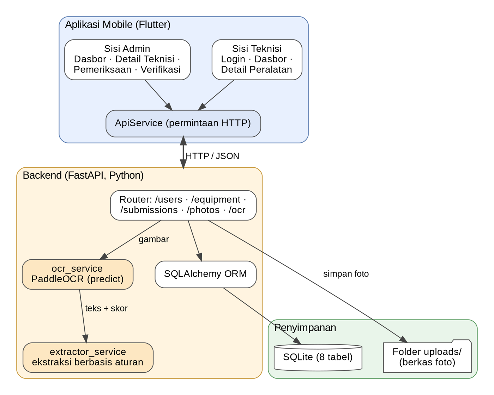

Aplikasi mobile pembaca dokumen otomatis yang membaca teks pada foto dokumentasi Alat Kerja (Alker) dan Sarana Kerja (Sarker) teknisi, lalu menyatukan unggah, penyimpanan, dan verifikasi dalam satu alur.
Selama PLI di bagian Admin Assurance PT Telkom Akses Padang, dokumentasi Alker dan Sarker dari teknisi dikirim lewat grup Telegram lalu diperiksa satu per satu secara manual. Aplikasi ini dikembangkan untuk membantu proses tersebut.
Aplikasi dikembangkan setelah pelaksanaan PLI atas usulan dosen pembimbing, bukan permintaan langsung dari PT Telkom Akses, dan masih berstatus prototipe.
Dua peran pengguna dengan tampilan yang disesuaikan dengan kebutuhan masing-masing.
Teknisi memotret alat dengan kamera atau memilih dari galeri. Foto dikompresi sebelum diunggah agar ringan.
PaddleOCR membaca teks pada foto, lalu ekstraksi berbasis aturan mengambil tanggal, nomor seri, merek, dan model.
Admin memeriksa foto beserta hasil OCR, menjalankan OCR ulang bila perlu, lalu menekan “Verifikasi Valid”.
Status Belum Upload, Perlu Review, dan Terverifikasi terlihat per peralatan, lengkap dengan progres per teknisi.
Splicer, OPM, VFL, LAN Tester, OTDR, kendaraan, perlengkapan, hingga paket internet dalam satu daftar.
Format JPG/PNG/WEBP, maksimal 10 MB dan 3 foto per peralatan. Kata sandi disimpan sebagai hash PBKDF2-SHA256.
Login dengan NIK, lalu pilih peralatan dari daftar pemeriksaan periode aktif.
Server memvalidasi format, ukuran, dan jumlah foto sebelum menyimpannya.
Teks mentah, skor confidence, dan data terstruktur disimpan ke basis data.
Admin memeriksa bukti dan hasil OCR, lalu menetapkan status valid.
Geser ke samping untuk melihat tampilan sisi teknisi dan admin. Data pada tangkapan layar adalah akun demo.




Aplikasi mobile Flutter berkomunikasi dengan backend FastAPI melalui HTTP/JSON. OCR dijalankan oleh PaddleOCR, dan data tersimpan di SQLite.

Aplikasi diuji penulis sendiri dengan dua akun uji. Berikut capaian dan rencana perbaikannya.
Unduh APK untuk perangkat Android atau jelajahi kode sumber dan dokumentasinya di GitHub.
Versi debug untuk pratinjau. Aktifkan “instal dari sumber tidak dikenal” di Android bila diminta.